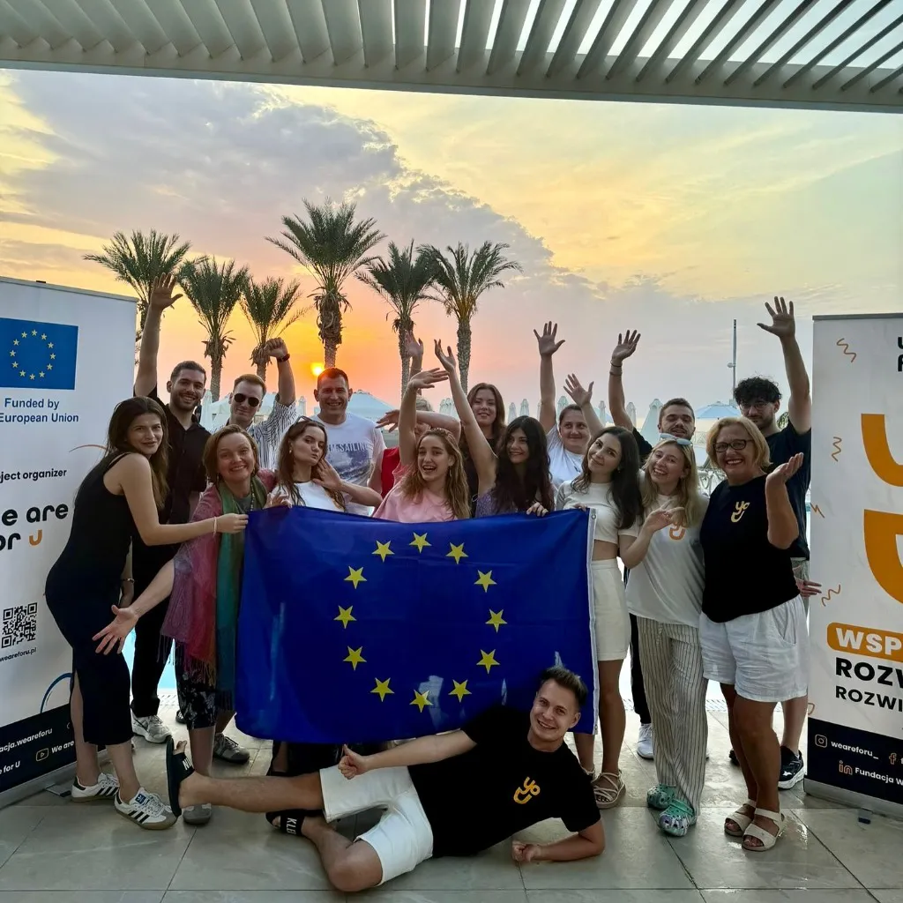

Menü
Az ABOVE azért létezik, hogy az európai változásformálók új generációját fejlessze ki az ifjúsági részvétel és a vállalkozói gondolkodásmód segítségével.
Tudj meg többet
Hiszünk egy olyan Európában, ahol a kritikus gondolkodás, a technológiai fejlődés és az emberi összefogás hatására megszűnnek a tudásbeli szakadékok. Küldetésünk, hogy a magyar fiatalokat olyan készségekkel ruházzuk fel, amelyekkel magabiztosan és etikusan irányíthatják a jövő változásait.
Alapelveink vezérelnek minket minden döntésünkben és minden megvalósított projektünkben.
Hiszünk a határokon átívelő összefogásban és a demokratikus értékekben. Célunk az előítéletek lebontása és egy összetartó közösség építése.
Modern eszközökkel és non-formális módszerekkel képezzük a fiatalokat, hogy magabiztosan mozogjanak a digitális kor kihívásaiban.
Aktív felelősségvállalásra és pénzügyi tudatosságra ösztönözzük a fiatalokat, segítve őket abban, hogy saját ötleteiket fenntartható és sikeres projektekké formálják.
Minden hozzájárulás, legyen az idő vagy anyagi támogatás, közvetlenül a közösségek fejlesztését szolgálja.